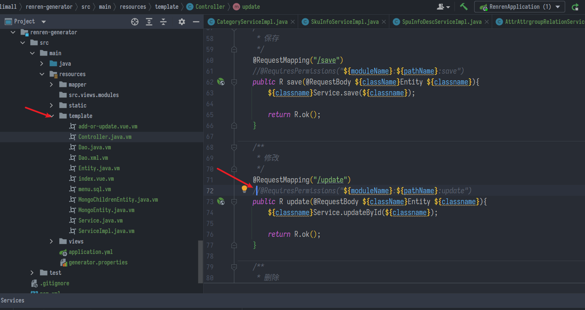
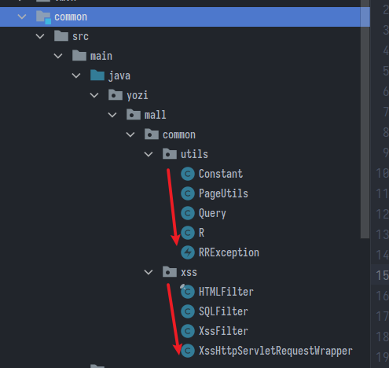

項目簡介 & 環境搭建
SpringBoot微服務項目筆記-01
項目簡介
市面上常見的電商模式
-
B2B(Business to Business)是指商家和商家建立的商業關係
-
B2C(Business to Consumer)就是我們經常看到的供應商直接把商品賣個用户，也就是商業零售，直接面向消費銷售產品和服務
-
C2B(Customer to Business)即消費者對企業，先有消費者需求產生而後有企業生產，即先有消費者提出需求，後又生產企業按需求組織生產
-
C2C(Customer to Consumer)客户之間把自己的東西放到網上去賣
-
O2O(Online To Offline)將線下商務的機會與互聯網結合在一起，讓互聯網成為線下交易前台，線上快速支付線下優質服務，如UBER
-
-
穀粒商城是一個B2C模式的電商平台
項目架構圖

- 微服務劃分圖

項目技術&特色
- 前後分離開發，並開發基於 vue 的 後台管理系統
- SpringCloud 全新的解決方案
- 應用監控、限流、網關、熔斷降級、等分佈式方案，全方位涉及
- 透徹講解分佈式事務，分佈式鎖等分佈式系統的難點
- 壓力測試與性能優化
- 各種集群技術的區別以及使用
- CI/CD 使用
環境搭建
安裝linux虛擬機
-
下載VirtualBox
-
下載Vagrant
-
使用Vagrant快速建立linux虛擬機，打開window cmd或power shell
// 初始化一個centos系統，看到Machine booted and ready!就是完成了
Vagrant init centos/7
// 啓動虛擬機
vagrant up
// 重啟
vagrant reload
// 連線至vagrant
vagrant ssh
// 上傳文件
vagrant upload source [destination] [name|id]
- 預設系統root用户的密碼是vagrant
- 預設在C:/user/username下會有Vagrantfile檔案，這裡可以設定虛擬機
- 為了讓虛擬機IP固定，先查找本機分配給虛擬網卡的IP，通常是192.168.56.1
- 可以在cmd用
ipconfig指令查看
- 可以在cmd用
- 進到Vagrantfile檔案，在約35行，先把開頭的#註釋取消，設定
config.vm.network "private_network", ip: "192.168.56.10"
- 保存設定後須重啟，可以用Oracle VM VirtualBox的管理員關閉或指令
vagrant halt - 設定完互相ping一下看看是否都能通
同步錯誤問題
- 使用vagrant途中被狂洗屏，錯誤訊息是
There was an error when attempting to rsync a synced folder
- 主要是同步檔案引起的，解法很簡單，裝插件或停用同步即可，參考這篇
- 注意同步掛載的路徑不要亂配，兩個路徑都要存在，亂配虛擬機可能會不停掛載本機硬碟，直接塞滿
安裝Docker
官方的步驟，一步一步執行，遇到有問Is this ok [y/N]就一路Y下去
- 可以先取得root權限，避免一直輸入sudo，但確定不要手誤
su - root
- Uninstall old versions
sudo yum remove docker \
docker-client \
docker-client-latest \
docker-common \
docker-latest \
docker-latest-logrotate \
docker-logrotate \
docker-engine
-
SET UP THE REPOSITORY
- Install the
yum-utilspackage (which provides theyum-config-managerutility) and set up the stable repository.
- Install the
sudo yum-config-manager \
--add-repo \
https://download.docker.com/linux/centos/docker-ce.repo
-
INSTALL DOCKER ENGINE
- Install the latest version of Docker Engine and containerd, or go to the next step to install a specific version:
sudo yum install docker-ce docker-ce-cli containerd.io
- Start Docker
sudo systemctl start docker
- Verify that Docker Engine is installed correctly by running the
hello-worldimage.
sudo docker run hello-world
- 設置docker開機自啓動
sudo systemctl enable docker
Docker基本操作
// 拉映像
docker pull 映像名
// 進入容器
docker run -it <容器ID或標籤> /bin/bash
// 退出容器
exit
// 查看容器
docker ps
// 開關容器
docker stop <容器ID或標籤>
docker start <容器ID或標籤>
docker restart <容器ID或標籤>
// 刪除
docker rm -f <容器ID或標籤>
安裝MySQL
基於Docker
- 下載鏡像文件
docker pull mysql:5.7
- 創建實例並啓動
# --name指定容器名字 -v目錄掛載 -p指定端口映射 -e設置mysql參數 -d後台運行
docker run -p 3306:3306 --name mysql \
-v /mydata/mysql/log:/var/log/mysql \
-v /mydata/mysql/data:/var/lib/mysql \
-v /mydata/mysql/conf:/etc/mysql \
-e MYSQL_ROOT_PASSWORD=root \
-d mysql:5.7
####
-v 將對應文件掛載到主機，省得每次都要進到容器改設定
-e 初始化對應
-p 容器端口映射到linux主機的端口
預設utf8的5.7
docker run -p 3306:3306 --name mysql5 -e MYSQL_ROOT_PASSWORD=root -d bingozhou/mysql5.7
- MySQL 配置
vi /mydata/mysql/conf/my.cnf創建&修改文件
[client]
default-character-set=utf8mb4
[mysql]
default-character-set=utf8mb4
[mysqld]
init_connect='SET collation_connection = utf8_unicode_ci'
init_connect='SET NAMES utf8'
character-set-server=utf8mb4
collation-server=utf8_unicode_ci
skip-character-set-client-handshake
skip-name-resolve
- 設定完使用
docker restart mysql重啟套用
vi基本操作
http://120.105.184.250/cswang/thit/Linux/Command-vi.htm
- vi是linux共通的文字編輯器，初學會超卡，首先注意左下的模式，一進去預設是
command mode不能打字，需要按i或a或o切換成insert mode才能輸入i插入，從目前游標所在之處插入所輸入的文字a增加，目前游標所在的下一個字開始輸入文字o插入新的一行，從行首開始輸入文字
- 按
esc回到command mode，按:冒號進入lastline mode:w filename以filename為檔名存檔(類似另存新檔的意思):wq存檔並退出:q!放棄並離開
安裝Redis
# 先拉映像檔，手動創建文件夾與設定檔
docker pull redis
mkdir -p /mydata/redis/conf
touch /mydata/redis/conf/redis.conf
# 啓動 同時 映射到對應文件夾
# 後面 \ 代表換行
docker run -p 6379:6379 --name redis \
-v /mydata/redis/data:/data \
-v /mydata/redis/conf/redis.conf:/usr/local/etc/redis.conf \
-d redis redis-server /usr/local/etc/redis.conf \
--appendonly yes
- 使用 redis 鏡像執行 redis-cli 命令連接
docker exec -it redis redis-cli
- 持久化appendonly若沒有開啓 (我上面啟動容器加了，沒加再手動改)
vi /mydata/redis/conf/redis.conf
# 插入下面內容
appendonly yes
建專案模組
- 基礎框架與導入sql部分跳過
人人開源
- 開發的腳手架，提供現成的管理平台與代碼生成
- https://gitee.com/renrenio
renren-fast
- 管理平台的server部分
- 加為專案的子模組，修改
application-dev.yml中SQL連線設定，導入管理用的SQL
- 加為專案的子模組，修改
git clone https://gitee.com/renrenio/renren-fast.git
renren-fast-vue
為對應的管理網頁
- 管理平台的前端頁面部分
git clone https://gitee.com/renrenio/renren-fast-vue.git
- 下載後
npm i安裝依賴，用VS code打開，npm run dev執行
// 如果遇到saas錯誤
npm rebuild node-sass
npm uninstall node-sass
npm i node-sass --sass_binary_site=https://npm.taobao.org/mirrors/node-sass/
- 將前後服務都啟動，可以看到驗證碼圖片，即可登入，預設帳號密碼admin
代碼生成器
- 導入為專案子模組
git clone https://gitee.com/renrenio/renren-generator.git
- application.yml
# mysql
spring:
datasource:
type: com.alibaba.druid.pool.DruidDataSource
#MySQL配置
driverClassName: com.mysql.cj.jdbc.Driver
url: jdbc:mysql://localhost:3306/gulimall_pms?useUnicode=true&characterEncoding=UTF-8&serverTimezone=Asia/Shanghai
username: root
password: root
- generator.properties
#代碼生成器，配置信息
mainPath=yozi.mall
#包名
package=yozi.mall
moduleName=product
#作者
author=yoziming
#Email
email=yoziming@gmail.com
#表前綴(類名不會包含表前綴)
tablePrefix=pms_
- 進模板註釋掉不要的部分

- 將工具包放到自己專案的common模組下
- 從
renren-fast\src\main\java\io\renren\common\拿
- 從

- common模組被專案其他子模組全部引用，在這邊添加需要的依賴
<dependencies>
<dependency>
<groupId>com.baomidou</groupId>
<artifactId>mybatis-plus-boot-starter</artifactId>
<version>3.5.0</version>
</dependency>
<dependency>
<groupId>mysql</groupId>
<artifactId>mysql-connector-java</artifactId>
<version>8.0.23</version>
</dependency>
<dependency>
<groupId>org.apache.httpcomponents</groupId>
<artifactId>httpcore</artifactId>
<version>4.4.1</version>
</dependency>
<dependency>
<groupId>org.apache.httpcomponents</groupId>
<artifactId>httpclient</artifactId>
<version>4.5</version>
</dependency>
<dependency>
<groupId>org.projectlombok</groupId>
<artifactId>lombok</artifactId>
<version>1.18.22</version>
</dependency>
<dependency>
<groupId>commons-lang</groupId>
<artifactId>commons-lang</artifactId>
<version>2.6</version>
</dependency>
</dependencies>
- 回到product模組，application.yml
spring:
application:
name: gulimall_pms
datasource:
username: root
password: root
url: jdbc:mysql://localhost:3306/gulimall_pms?useUnicode=true&characterEncoding=UTF-8&serverTimezone=Asia/Shanghai
driver-class-name: com.mysql.cj.jdbc.Driver
# 設定全局主鍵自增
mybatis-plus:
mapper-locations: classpath:/mapper/**/*.xml
global-config:
db-config:
id-type: auto
- 隨便啟動一個測試，例如:
@SpringBootTest
class ProductApplicationTests {
@Autowired
BrandServiceImpl brandService;
@Test
void contextLoads() {
BrandEntity brandEntity = new BrandEntity();
brandEntity.setName("哈哈哈");
System.out.println(brandService.save(brandEntity));
}
}
- 完成5個子模組，對應端口號偏移1000
- 遇到Longblob類型換成Byte
- 注意spring cloud版本對應boot，我依賴改半天都不行，原來是
<properties>沒改到，也不知道是哪時候加的，好坑
<properties>
<java.version>1.8</java.version>
<spring-cloud.version>2020.0.5</spring-cloud.version>
</properties>
- 新增專案還是先造父模組用依賴管理比較好，不然真的太亂。子模組繼承父模組的依賴管理版本號，自己要有starter-web、openfeign、test與依賴common模組
<dependencies>
<dependency>
<groupId>org.springframework.boot</groupId>
<artifactId>spring-boot-starter-web</artifactId>
</dependency>
<dependency>
<groupId>org.springframework.cloud</groupId>
<artifactId>spring-cloud-starter-openfeign</artifactId>
</dependency>
<dependency>
<groupId>org.springframework.boot</groupId>
<artifactId>spring-boot-starter-test</artifactId>
<scope>test</scope>
</dependency>
<dependency>
<groupId>yozi</groupId>
<artifactId>common</artifactId>
<version>0.0.1-SNAPSHOT</version>
</dependency>
</dependencies>
<build>
<plugins>
<plugin>
<groupId>org.springframework.boot</groupId>
<artifactId>spring-boot-maven-plugin</artifactId>
</plugin>
</plugins>
</build>
- 有時候真的就是有BUG，明明pom寫好了怎刷新就導不進，註釋掉然後從發紅的類那邊用alt+enter導入，再回頭修pom就又可以了，真的很鳥
上次修改於 2022-01-18